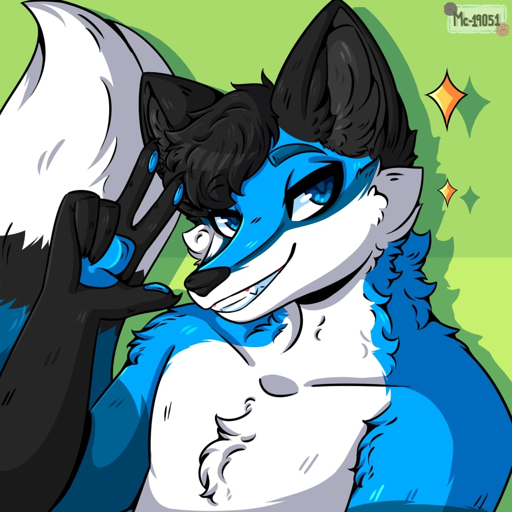

NOTICE: transportfoxie.pl is still under construction. Expect bugs, glitches and a whole bunch of empty pages.

me!!!!! (courtesy of Mc19051)
me!!!!! (courtesy of Mc19051)
neulis.
(transportfoxie)
species: blue fox
contacts:
youtube channel !
steam page !
discord: transportfoxie
feel free to contact me, as long as you're not a scammer!
hello!
my username is transportfoxie but you can call me neulis.if you don't know me, please don't be afraid to even message or friend me, i don't bite!
i will not get angry or annoyed at you for randomly friending or messaging me and it's nice to talk with new people every now and again!
(unless you "falsely reported" me or it's some other scam to try and get my account :c )
i am a polish blue fox who resides somewhere not too far from the hertford area :p
in the process of going through college :c
interests
i'm currently in a grey zone regarding interests but here's a list of what i could think of:• transport (especially the following, but i still like buses n' stuff!)
→ • trams
→ • lower silesian railways !!! (very cool operator)
→ • polish public transport in general !! (i dunno why)
• travelling (visiting places and especially exploring their transport networks)
• foxes (silly little urban creatures)
• lidl (major reason i'm not living on the streets :p)
• i listen to lapfox trax and whatnot (although i'm a "i don't focus on one genre" type person)
• i like computers (i fell off a bit a few years ago but i can still build one :3)
• i like filming and editing videos to music (although the stuff i make tends to be very fast-paced and all-over the place at times)
• i play games (duhh, but please don't expect me to have played many mainstream games, my selection is very strange indeed as you can tell)
• i do like things like stepmania every now and again (BUT i usually play with keyboard and my skill is very average, calling it an interest is a stretch)